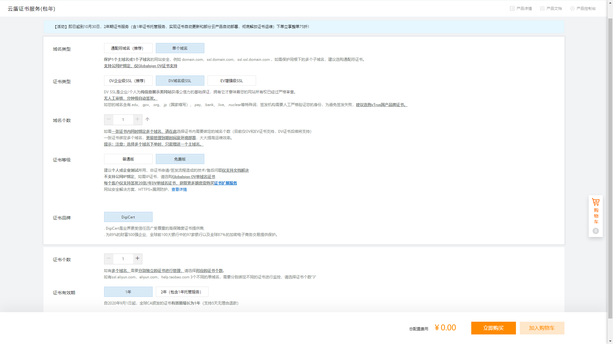

Linux服务器标配的基本环境。记录了服务器常用软件的安装方法，nginx、rar、https证书等。
rar解压工具
安装rar解压工具1
2
3
4wget https://www.rarlab.com/rar/rarlinux-x64-5.9.1.tar.gz
tar -zxf rarlinux-x64-5.9.1.tar.gz
cd rar
make
安装完成后就可以使用unrar x xxx.rar这个命令来解压压缩包。
Nginx
安装
需要先安装Nginx的前置依赖。-y是可选参数，意思是在安装的过程中遇到Is this OK[y/d/N]的时候，自动选择y。这个其实就是和Windows环境下的默认安装是同一个道理。1
2
3
4yum [-y] install gcc
yum [-y] install pcre-devel
yum [-y] install zlib zlib-devel
yum [-y] install openssl openssl-devel
下载Nginx的安装包。1
wget http://nginx.org/download/nginx-1.13.7.tar.gz
解压安装包。1
tar -xvf nginx-1.13.7.tar.gz
运行configure。
参数--with-http_ssl_module，这个模块能够支持HTTPS。
参数--with-http_stub_status_module，这个模块能够获取Nginx自上次启动以来的工作状态1
2cd nginx-1.13.7/
./configure --prefix=/usr/local/webserver/nginx --with-http_ssl_module --with-http_stub_status_module
编译，安装。
make && make install
loaction
匹配顺序优先级：
（location =）> (location 完整路径）> (location ^~ 路径) > (location ~，~*正则顺序) >(location 部分起始位置) > （/）
| 参数 | 解释 |
|---|---|
| = | 精确匹配。如果完全匹配到，则停止匹配。 |
| ^~ | 模糊匹配，最长优先。匹配到最长路径，则停止匹配。 |
| ~ | 模糊匹配，最长优先。执行一个正则匹配，区分大小写。 |
| ~* | 模糊匹配，最长优先。执行一个正则匹配，不区分大小写。 |
| 空 | 模糊匹配，最长优先。 |
| @ | “@” 定义一个命名的 location，@定义的locaiton名字一般用在内部定向，例如error_page, try_files命令中。它的功能类似于编程中的goto。 |
root和alias的区别
location中的root和alias的最大区别是：root的结果是root+location，而alias的结果是alias替换location的路径。需要特别注意的是alias后的的路径需要以/结尾
使用root配置，访问http://www.xxx.com/test/a.html实际指定的是/home/www/test/a.html。1
2
3location /test/ {
root /home/www/;
}
使用alias配置，访问http://www.xxx.com/test/a.html实际指定的是/home/www/a.html。1
2
3location /test/ {
alias /home/www/;
}
https证书
先到阿里云购买免费证书。

在nginx监听443端口，配置上证书的路径。
以下配置能达到几个效果：
- 访问
http://www.domain.com默认跳转到https://www.domain.com - 访问
http://www.domain.com/会自动加上blog作为结尾，https://www.domain.com/blog
1 | http { |
限流
限速和限量